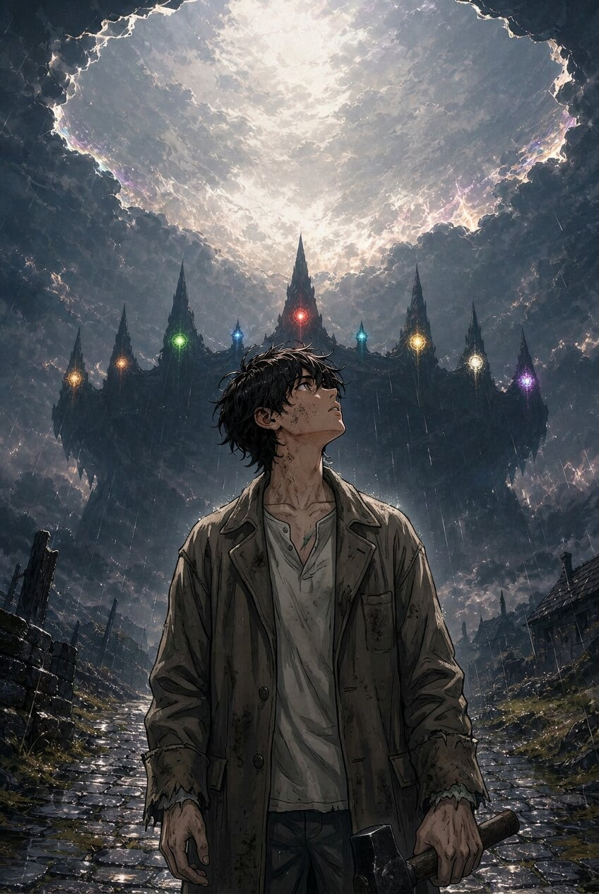

The theme: unity without erasure. No race is the monster — the monster is the hunger, and the cure is a name said back. A multi-race epic built from day one for manga, anime, movies, card games, and PC games: the power system is a card system first, the leads are realm-faces second, and the world is the IP.

Read the manga
Twenty-nine chapters are scripted (12 pages each — one chapter = one single issue = one anime episode). The six-chapter pilot ends with the King's first line, the grove's Re-Oath, and the Hollow's first word; Season 1 closes in Ch. 7–13 — the road is named, the Moot gives the realm's word, the white goes under, the Nine go down after it, the realm is called by every branch, and the finale answers with every name. Ch. 13 = Season 1 finale (end of Vol. 3, The First Crown); Ch. 14 opens Season 2 in Khazadûm, where a realm counts a person's word in their own hair and a mountain has stopped answering — Ch. 15 moves its court into the mine and puts a braid in the last Khazdûrin's beard — Ch. 16 walks fifty-eight doors for a dead man's face, Ch. 17 closes the year by lamp and asks the realm the one question it has ever been allowed to ask — Ch. 18 reads the whole year out loud in a mine until the realm uses the one word its law has always had, Ch. 19 calls the witness — the stone answers, and nine hundred names go into the year in pencil — Ch. 20 pays the bill, re-cutting the realm’s oath in fire — and Ch. 21 closes the volume: a century of shifts ending, a braid adopted, a pocket filled, and one line left blank on purpose — and **Volume 5 opens in the Barrens**, where a realm’s whole law is cut into its people’s arms, its only vote cannot be held, a captain drafts a clause that will cost the realm its skin — and Ch. 23 takes it into a maze whose walls are the realm’s code, and to the oldest maps in the world, where the crime turns out to have been **lawful** — and Ch. 24 takes the clause to the stones themselves: a vote that passes seven to two, a Speaker who steps back, the one it costs reading it aloud, and nine hundred arms cut one queue at a time — then Ch. 25 hands a lawyer’s words a duel to decide, leaves a beat-up loser holding a **school**, and sends a young reader east with the Nine — and Ch. 26 walks that law onto a road where nobody can read forearms at all, where paper is the local tongue, and where the realm’s only export that works is a person — then Ch. 27 puts that person’s law on trial in a foreign court, and ends the road at the **Rift**, where a stockade keeps the hours of business — and Ch. 28 walks the founder back in off the grey to sit at a table with a captain and a teacher, and leaves the realm a clerk’s desk and the hardest answer it has had to write — before **Vol. 5 closes** with a collar that comes off, a war renamed into a road, a school’s first four refusals filed on a wall, and a **rest** drawn in the corner of the record.
How this site works
This is the project's index page, deployed straight from the repository on GitHub Pages — the repo is the site. The tabs open the same markdown files the team writes from: Manga (Season 1, chapter by chapter), Story Bible (saga, races, cast book, power system), Characters (design sheets), Locations (world guides), and Future Scope (the franchise roadmap). New chapters and scopes land here with every push.
The Manga — Season 1 (Volumes 1–3)
The main series is the spine: the same world, told panel by panel, in the order the realms wake. Ch. 1–2 = Vol. 1 “The Scar” · Ch. 3–5 = Vol. 2 “The Withering” · Ch. 6–13 = Vol. 3 “The First Crown” (S1 closed) · Vol. 4 “The Mountain-Ask” runs Ch. 14–21 (complete); Vol. 5 “The One Throat” runs from Ch. 22.
The Story Bible
The canon — the fixed facts every medium builds on. The canon spine (what to protect) is in file 05, §I.
Characters
The cast, organized for the art team, the card game, and the reader. Design sheets here; the 628-name cast book lives in the Story Bible.
Locations
Where the story lives: the town that starts it, and the nine realms that wake to end it.
Future Scope — The Franchise Roadmap
AURELION is not a story that gets adapted — it's a world that gets built. The saga is the spine; the scope is the flesh. Open the file to see the anime, manga, movie, TCG, and PC-game roadmaps, the 10-year IP timeline, and the sequel scope.